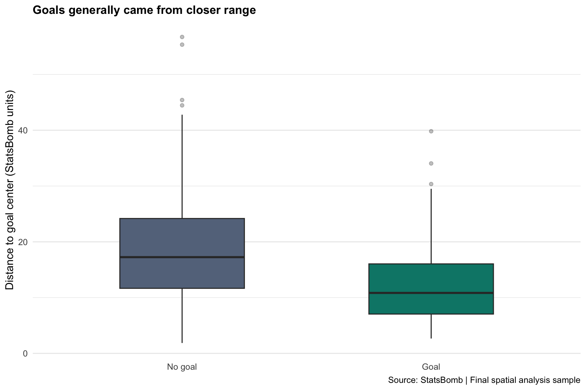

About the Data
Data source and acquisition
This project uses StatsBomb Open Data from the 2023 FIFA Women’s World Cup.
The data were downloaded in R using the jsonlite package. First, I retrieved the tournament’s match list using competition identifier 72 and season identifier 107. This returned 64 matches.
I then used each match identifier to download its event file, selected shot events, and combined them into one dataset. The download contained 1,678 shot events.
The original files use JSON format. Each match event file contains records of actions during a match, rather than one row per player or match. After selecting shots, each row in the analysis dataset represented one shot attempt.
Variables selected
The following fields were retained from the event files:
| Variable | Description |
|---|---|
| Event identifier | Unique identifier used to check for duplicate shots |
| Match identifier | Identifier linking each shot to a match |
| Player and team | Player taking the shot and their team |
| Minute and period | Timing of the shot, including regulation, extra time, or shootout |
| x and y coordinates | Starting location of the shot |
| Outcome | Recorded result, such as goal, saved, blocked, or off target |
| Body part | Body part used to take the shot |
| Shot type | Classification such as open play, free kick, or penalty |
Data quality checks and exclusions
I checked for duplicate event identifiers and missing values in the event identifier, period, coordinates, outcome, and shot type. No duplicates or missing values were found in these fields.
The preparation steps were:
- Retain shot events from regulation time and extra time, corresponding to periods 1–4.
- Exclude shots classified as penalties. Together with excluding shootouts, this removed 70 events.
- Check shot locations against the standardized pitch boundaries.
- Exclude one additional shot recorded beyond the attacking goal line.
The excluded location belonged to a Katie McCabe goal, recorded at x = 120.5 and y = 79.6. This exceeded the standardized pitch length of 120. The record was preserved separately. The exclusion was based on its location and does not establish that the recorded event itself was incorrect.
| Preparation stage | Shots |
|---|---|
| All downloaded shot events | 1,678 |
| After excluding penalties and shootouts | 1,608 |
| After excluding the out-of-bounds location | 1,607 |
The final spatial analysis sample contained 135 goals and 1,472 shots that did not result in goals.
Derived variables
Scoring outcome
A binary variable identified whether each shot resulted in a goal:
- 1: outcome recorded as Goal.
- 0: any other recorded shot outcome.
This analysis counts goals recorded as shot events; it is not a count of all tournament goals, including own goals.
Shot distance
StatsBomb uses a standardized pitch coordinate system running from 0 to 120 along its length and 0 to 80 across its width. For shot events, the attacking goal is at x = 120.
Distance to the goal center was calculated as:
\[ \text{Distance} = \sqrt{(120-x)^2 + (40-y)^2} \]
Distances are reported in StatsBomb coordinate units. They describe locations on a standardized pitch rather than directly measured distances on each stadium’s field.
For descriptive comparisons, distances were grouped into:
- 0–6 units
- Greater than 6 through 12 units
- Greater than 12 through 18 units
- Greater than 18 through 24 units
- Greater than 24 units
Shooting angle
Shooting angle was calculated as the angle between the lines connecting the shot location to the two goalposts, located at (120, 36) and (120, 44).
Angles were expressed in degrees. A larger angle indicates that more of the goalmouth is visible from the shot location. It does not directly measure the shooter’s body orientation or account for defenders.
Angles were grouped into 0–15°, greater than 15–30°, greater than 30–45°, and greater than 45°.
Body-part groups
Shots were grouped as:
- Foot: Left Foot or Right Foot.
- Header: Head.
- Other: all remaining body-part categories.
All three groups were included in descriptive summaries. The regression comparison included only foot shots and headers because the other category contained just 12 attempts.
Exploratory analysis
I compared the distribution of shot distances between goals and other outcomes using a boxplot.
Shots resulting in goals had a lower median distance than shots that did not result in goals. However, the distributions overlapped: some close-range shots were unsuccessful, while some long-range shots resulted in goals.
The dots beyond the boxplot whiskers represent unusually distant shots relative to each group’s distribution. These were not automatically treated as data errors or removed.
I also compared scoring percentages across distance, angle, and body-part groups. Comparisons of median distance and angle by body part helped identify differences in where headers and foot shots were taken.
Regression analysis
An exploratory logistic regression modeled whether a shot resulted in a goal using:
- Distance to the goal center.
- Shooting angle in degrees.
- Body part: header versus foot.
Foot shots were the reference category. The model included 1,595 shots and 130 goals.
Results were expressed as odds ratios. Approximate 95% confidence intervals were calculated by exponentiating each regression coefficient plus or minus 1.96 times its standard error.
The model assumes linear relationships between distance and angle and the log-odds of scoring. It treats shots as independent and does not account for repeated attempts by the same players or teams. It also omits contextual factors such as defensive pressure and goalkeeper positioning.
Sensitivity analysis
To assess sensitivity to the location exclusion, I refitted the same regression after adding the excluded shot using its recorded coordinates.
The distance odds ratio changed from 0.937 to 0.945, the shooting-angle odds ratio from 1.030 to 1.031, and the header odds ratio from 0.394 to 0.401. The estimates retained the same direction and similar magnitudes.
Tools and reproducibility
Data acquisition, cleaning, and analysis were performed in R. Packages used included:
- jsonlite: importing the JSON files.
- ggplot2: creating static figures.
- plotly: creating the interactive shot map.
- knitr: formatting report tables.
Quarto was used to build the website. Preparation code was kept in data_preparation.R, and prepared objects were saved locally so the website could render without downloading every match again.
Local data files were excluded from version control using .gitignore.
Data credit
Data provided by StatsBomb. Coordinate definitions and event descriptions are available in the repository’s documentation.
Exploratory tables and plots will be added after the data has been prepared.
Data credit
Data provided by StatsBomb.